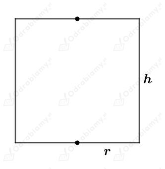
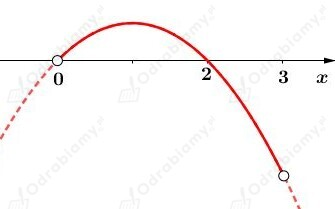

Dany jest walec o promieniu podstawy długości r i wysokości długości h.
Naszkicujmy przekrój osiowy tego walca:

Wiedząc, że obwód tego prostokąta ma długość 12 cm mamy:
Założenie:
więc
Wyznaczmy objętość tego walca jako funkcję zmiennej r. Mamy:
Wyznaczmy pochodną funkcji V. Mamy:
Wyznaczmy miejsce zerowe pochodnej. Mamy:
Tylko liczba r=2 [cm] należy do dziedziny badanej funkcji.
Naszkicujmy przybliżony wykres pochodnej V'. Mamy:

Zauważmy, że
oraz
Zatem
oraz
Zatem funkcja V osiąga maksimum w punkcie r=2 [cm].
Wyznaczmy długość wysokości. Mamy:
Odp. Objętość walca jest największa wtedy, gdy promień podstawy ma długość 2 cm i wysokość ma długość 2 cm.
Dana jest puszka w kształcie walca o promieniu podstawy długości r i wysokości długości h.
Objętość tego walca wynosi 1 l. Mamy stąd:
Założenie:
czyli
Wyznaczmy pole powierzchni całkowitej tego walca jako funkcję zmiennej r. Mamy:
Wyznaczmy pochodną funkcji P. Mamy:
Wyznaczmy miejsce zerowe funkcji P'. Mamy:
Zauważmy, że
oraz
Zatem
oraz
Zatem pole powierzchni całkowitej walca jest najmniejsze dla
Wyznaczmy długość wysokości tego walca. Mamy:
Dana jest blaszana puszka w kształcie walca o promieniu podstawy r i wysokości długości h.
Niech c będzie ceną materiału, z którego wykonuje się powierzchnię boczną.
Objętość tej puszki wynosi 0,4 dm2 = 400 cm3. Mamy stąd:
Na wycięcie kół na obie podstawy trzeba przeznaczyć kwadratowe kawałki blachy. Bok takiego kwadratu ma długość 2r.
Wyznaczmy koszt wykonania puszki jako funkcję zmiennej r. Mamy:
Wyznaczmy pochodną funkcji k. Mamy:
Wyznaczmy miejsce zerowe pochodnej. Mamy:
Zauważmy, że
oraz
Zatem
oraz
Więc koszt wykonania tej puszki jest najmniejszy dla
Wyznaczmy długość wysokości tej puszki. Mamy: